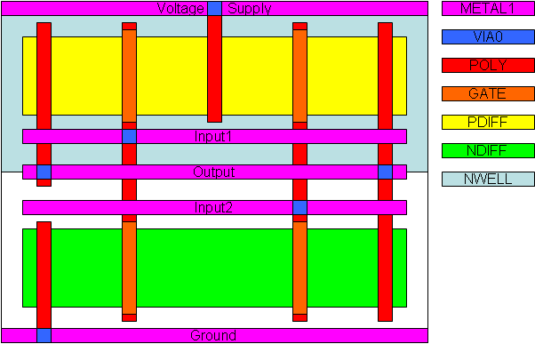
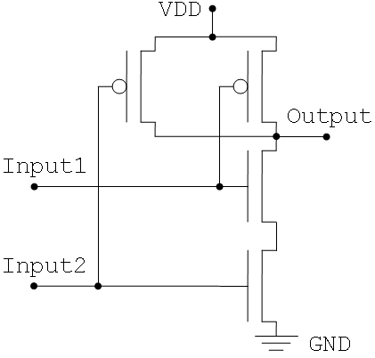

在本教程中, 我们将实现一个玩具级的 VLSI 版图验证应用. 在 VLSI CAD 中, 设计的一个重要步骤是签核检查 (sign off check), 用于验证掩模设计师与自动化工具绘制的物理版图是否实现了设计工程师指定的逻辑原理图. 物理版图被建模为若干层上的多边形, 这些层在制造过程中用于把版图印制到硅晶圆上. 在花费数百万美元制作光刻掩模并运行测试批次晶圆之前就发现物理设计错误, 要好得多.
真实的版图文件格式是二进制的, 且通常是压缩的, 表示一个折叠的层次化版图模型, 其中一组多边形可以组合成一个单元 (cell), 并作为一个组实例化到其他单元中. 在本教程中, 我们假定一种简化的 ascii 版图文件格式, 不含设计层次, 用 VLSI 行话来说就是"平面" (flat) 的. 类似地, 我们假定一种平面的 ascii 逻辑原理图网表文件格式. 网表 (net) 是电路设计中一个命名的电气连接. 版图验证教程的目标是解析这两种文件格式, 对版图数据应用 Boost.Polygon 提供的几何运算以生成一个表示物理版图所实现内容的逻辑原理图, 然后把输入原理图与生成的原理图进行比较, 以确定二者是否相同.
首先, 让我们定义一些在设计玩具版图验证应用时需要用到的对象:
版图矩形: 一个与层关联的轴平行矩形
版图引脚: 一个与层和网 (电气信号) 名称关联的轴平行矩形
版图数据库: 层名到多边形集合的关联容器
连通性数据库: 网名到版图数据库的关联容器
物理器件: 若干层上的一种特定几何排布, 具有一个或多个输入网和一个输出网
逻辑网: 命名的图节点
逻辑器件: 带有器件类型的未命名图节点
逻辑引脚: 为电路定义输入或输出的特殊网
原理图数据库: 由网和逻辑器件构成的图
接下来, 让我们定义玩具版图与原理图比对应用所执行的操作序列:
解析版图: 把版图矩形与多边形流式读入版图数据库, 并把版图引脚流式读入连通性数据库
提取连通性: 基于物理接触或重叠关系, 把版图数据库中的多边形加入连通性数据库
提取器件: 根据在版图几何中识别出的物理器件, 用逻辑器件填充原理图数据库, 并从连通性数据库中提取它们的端子
提取网表: 补全由版图导出的原理图数据库所表示的图
解析原理图: 把逻辑网、器件和引脚流式读入一个原理图数据库
比较原理图: 评估提取出的原理图数据库是否与输入原理图数据库等价, 并输出结果
为了测试我们的应用, 我们将提取单个逻辑门. 逻辑门是多个晶体管的组合, 共同完成特定的逻辑功能. 逻辑功能包括人们熟知的布尔逻辑运算, 如布尔 AND、OR、XOR 和 INVERT. 常用的还有 NAND 和 NOR, 分别是先执行 AND/OR 运算再执行 INVERT 运算. 在 CMOS 电路家族中, 一个 NAND 门可以用四个晶体管实现. NAND 门有两个输入和一个输出. 每个输入连接到两个晶体管: 一个 p 型晶体管和一个 n 型晶体管. "p" 代表 positive (正), "n" 代表 negative (负). 当 p 型晶体管导通时, 它把输出拉高到与电源电压相同. 当 n 型晶体管导通时, 它把输出拉低到与地电压相同. 制作 p 型晶体管的过程首先要对硅衬底进行"掺杂"以生成 n 型材料. 这块 n 型材料区域在我们的测试数据中将被称为 NWELL 层. 在 NWELL 区域内, 通过对硅进一步掺杂以生成 p 型材料, 从而形成 p 扩散区. 这块 p 型材料区域在我们的测试数据中将被称为 PDIFF. 在 PDIFF 区域的中央生长出多晶硅条, 在扩散区上方形成导电线路. 这块多晶硅材料区域在我们的测试数据中将被称为 POLY. 在其中一些多晶硅线条下方, 一层薄薄的二氧化硅提供绝缘, 同时允许多晶硅的电压场与扩散区发生相互作用. 每一条这样的绝缘多晶硅线就是一个晶体管的"栅极". 这个栅极区域在我们的测试数据中将被称为 GATE. 当栅极电压与地电压相同时, p 型晶体管"导通", 可以把电流从电源传送到输出. 未被绝缘的多晶硅线为晶体管提供输出信号和源电压的电气连接. n 型晶体管与 p 型的区别在于, 其扩散区是 NWELL 区域之外的 n 型材料. 当 n 型晶体管栅极电压处于源电压水平时, 电流可以从输出流向地. 在多晶硅层之上是一层二氧化硅绝缘体, 上面开有孔并用金属填充. 这些金属填充的孔称为过孔 (via), 我们在测试数据中把这一层称为 VIA0. 在 VIA0 之上是一层金属多边形, 金属多边形之间以二氧化硅绝缘体隔开. 这些金属多边形就是导线, 我们在测试数据中把它们称为 METAL1. 我们测试数据中的版图引脚将位于 METAL1 上. 在 NAND 门中, 两个 n 型晶体管串联配置, 即一个晶体管的输出是另一个的输入电压源. 只有当 NAND 的两个 n 型晶体管都"导通"时, 输出才会连接到地, 表示逻辑"假". NAND 门中的两个 p 型晶体管并联配置. 只要 NAND 门的任一输入为逻辑"假", 与其相连的 p 型晶体管就会"导通", 门的输出将是逻辑"真", 因为晶体管会把它连接到电源. 下图是 NAND 门可能的版图布局示例, 未按任何真实工艺节点的比例绘制. 扩散区材料本应在栅极材料下方被布尔 NOT 运算切掉, 图中仅在晶体管栅极下方用实心条表示扩散区, 只是为了绘图方便.

以下是上述 NAND 门版图的输入版图文件, 矩形格式为 XL XH YL YH:
Rectangle 0 60 24 48 NWELL
Rectangle 3 57 32 43 PDIFF
Rectangle 3 57 5 16 NDIFF
Rectangle 5 7 0 17 POLY
Rectangle 5 7 22 45 POLY
Rectangle 17 19 3 45 POLY
Rectangle 29 31 31 48 POLY
Rectangle 41 43 3 45 POLY
Rectangle 53 55 3 45 POLY
Rectangle 17 19 4 17 GATE
Rectangle 17 19 31 44 GATE
Rectangle 41 43 4 17 GATE
Rectangle 41 43 31 44 GATE
Rectangle 5 7 0 2 VIA0
Rectangle 5 7 23 25 VIA0
Rectangle 17 19 28 30 VIA0
Rectangle 29 31 46 48 VIA0
Rectangle 41 43 18 20 VIA0
Rectangle 53 55 23 25 VIA0
Rectangle 0 60 0 2 METAL1
Rectangle 3 57 28 30 METAL1
Rectangle 0 60 46 48 METAL1
Rectangle 3 57 18 20 METAL1
Rectangle 3 57 23 25 METAL1
Pin 29 31 0 2 METAL1 GND
Pin 29 31 23 25 METAL1 OUTPUT
Pin 29 31 28 30 METAL1 INPUT1
Pin 29 31 46 48 METAL1 VDD
Pin 29 31 18 20 METAL1 INPUT2

以下是上述 NAND 门原理图的逻辑原理图网表文件:
Pin OUTPUT
Pin INPUT1
Pin INPUT2
Pin VDD
Pin GND
Device PTRANS VDD INPUT1 OUTPUT
Device PTRANS VDD
INPUT2 OUTPUT
Device NTRANS GND INPUT1 NET1
Device NTRANS NET1 INPUT2
OUTPUT
人眼可以看着这张原理图, 与上面绘制的 NAND 门版图进行比较, 几秒钟内即可验证所绘版图与原理图的描述相符. 如果你现在就这样做, 你可能会找出 p 型和 n 型晶体管, 并追踪输入和电源到晶体管端子、再到输出的连通性. 如今单个芯片上的晶体管数量约有十亿个, 我们需要比人眼检查版图快得多, 且出错更少. 利用 Boost.Polygon 提供的多边形集合运算与多边形连通性提取, 我们将把晶体管识别和连通性追踪自动化. 基于 Boost.Polygon 性能的这份分析, 我们可以预期这一方法在标准工作站上能够轻松扩展到百万门规模的模块, 只要系统内存充足, 也可以处理任意大的设计. 让我们从为应用实现一些数据结构开始.
struct layout_rectangle {
int xl, yl, xh, yh;
std::string layer;
};
我们的版图矩形非常精简, 刚好够存储其数据. 它定义于 layout_rectangle.hpp. 接下来让我们以类似的方式实现版图引脚.
struct layout_pin {
int xl, yl, xh, yh;
std::string layer;
std::string net;
};
我们的版图引脚定义于 layout_pin.hpp. 现在让我们定义一个版图数据库对象, 并用解析得到的版图数据填充它, 见 layout_database.hpp.
typedef std::map<std::string, boost::polygon::polygon_90_set_data<int> > layout_database;
//把版图矩形数据类型映射到 boost::polygon::rectangle_concept
namespace boost { namespace polygon{
template <>
struct rectangle_traits<layout_rectangle> {
typedef int coordinate_type;
typedef interval_data<int> interval_type;
static inline interval_type get(const layout_rectangle& rectangle, orientation_2d orient) {
if(orient == HORIZONTAL)
return interval_type(rectangle.xl, rectangle.xh);
return interval_type(rectangle.yl, rectangle.yh);
}
};
template <>
struct geometry_concept<layout_rectangle> { typedef rectangle_concept type; };
}}
//把版图矩形插入版图数据库
inline void populate_layout_database(layout_database& layout, std::vector<layout_rectangle>& rects) {
for(std::size_t i = 0; i < rects.size(); ++i) {
layout[rects[i].layer].insert(rects[i]);
}
}
我们不需要把引脚插入版图数据库, 因为它对连通性一无所知, 只关心几何. 然而, 要把原理图与版图进行比较, 我们确实需要了解一些连通性信息, 因此需要定义连通性数据库和一些逻辑对象. 首先我们在 device.hpp 中为逻辑器件定义一个对象. 由于我们比较懒, 这个对象身兼数职, 既用作引脚, 也用作两种晶体管. 传统的面向对象设计可能会声明一个带虚析构函数的基类, 并让每种器件都从它派生. 既然我们的报酬不按代码行数计算, 那就让事情保持简单吧.
struct device {
std::string type;
std::vector<std::string> terminals;
};
现在让我们在 schematic_database.hpp 中定义一个原理图数据库对象, 并用解析得到的原理图数据填充它.
struct schematic_database{
std::vector<device> devices;
std::map<std::string, std::set<std::size_t> > nets;
};
//给定器件向量, 填充网名到器件索引集合的映射
inline void extract_netlist(std::map<std::string, std::set<std::size_t> >& nets,
std::vector<device>& devices) {
for(std::size_t i = 0; i < devices.size(); ++i) {
for(std::size_t j = 0; j < devices[i].terminals.size(); ++j) {
//建立网名与器件 id 之间的关联
nets[devices[i].terminals[j]].insert(nets[devices[i].terminals[j]].end(), i);
}
}
}
我们的原理图数据库只是一个器件向量, 器件通过其端子按名称与网关联, 另有一个从网名到器件索引集合 (向量中的下标) 的映射, 通过把网与其器件关联起来完成这个图. 给定器件及其端子网, 我们用 extract_netlist 操作即可轻松构建从网到器件的映射. 现在, 我们可以开始把版图提取为派生的原理图数据库了. 不过, 首先需要构建一个含几何信息的物理连通性数据库, 然后才能从版图构建逻辑连通性数据库. 我们在 connectivity_database.hpp 中定义了一个简单的连通性数据库, 它是从网名到与该网相连的几何 (版图数据库) 的映射, 并用版图数据库和引脚数据填充它.
typedef std::map<std::string, layout_database > connectivity_database;
//把版图引脚数据类型映射到 boost::polygon::rectangle_concept
namespace boost { namespace polygon{
template <>
struct rectangle_traits<layout_pin> {
typedef int coordinate_type;
typedef interval_data<int> interval_type;
static inline interval_type get(const layout_pin& pin, orientation_2d orient) {
if(orient == HORIZONTAL)
return interval_type(pin.xl, pin.xh);
return interval_type(pin.yl, pin.yh);
}
};
template <>
struct geometry_concept<layout_pin> { typedef rectangle_concept type; };
}}
//给定一个 layout_database, 我们填充一个连通性数据库
inline void populate_connectivity_database(connectivity_database& connectivity,
std::vector<layout_pin>& pins, layout_database& layout) {
using namespace boost::polygon;
using namespace boost::polygon::operators;
for(std::size_t i = 0; i < pins.size(); ++i) {
connectivity[pins[i].net][pins[i].layer].insert(pins[i]);
}
int internal_net_suffix = 0;
//把 metal1 版图连接到位于 metal1 上的引脚
connect_layout_to_layer(connectivity, layout["METAL1"], "METAL1",
"METAL1", "__internal_net_", internal_net_suffix);
//把 via0 版图连接到 metal1
connect_layout_to_layer(connectivity, layout["VIA0"], "VIA0",
"METAL1", "__internal_net_", internal_net_suffix);
//poly 需要减去栅极, 以防止信号经由晶体管短路
polygon_set poly_not_gate = layout["POLY"] - layout["GATE"];
//把减去栅极的 poly 连接到 via0
connect_layout_to_layer(connectivity, poly_not_gate, "POLY",
"VIA0", "__internal_net_", internal_net_suffix);
//我们不希望信号经由晶体管短路, 因此把栅极区域
//从扩散区中减去
polygon_set diff_not_gate = (layout["PDIFF"] + layout["NDIFF"]) - layout["GATE"];
//把减去栅极的扩散区连接到 poly
//注意, DIFF 这个层名是我为合并的 PDIFF 与 NDIFF 起的名字
connect_layout_to_layer(connectivity, diff_not_gate, "DIFF",
"POLY", "__internal_net_", internal_net_suffix);
//把栅极连接到 poly, 以形成经由 poly 上栅极的连接
connect_layout_to_layer(connectivity, layout["GATE"], "GATE",
"POLY", "__internal_net_", internal_net_suffix);
//现在我们已经把版图的连通性追踪到晶体管层级
//所有未连接到引脚的多边形都已被赋予内部网名
}
这个填充连通性数据库的函数是我们在应用中第一次真正使用 Boost.Polygon. 例如, 这里我们对版图层执行布尔 (多边形集合) 运算, 把 PDIFF 层与 NDIFF 层合并, 并从结果中切掉 GATE 层. 我们从引脚开始连接版图, 沿层栈向下一直处理到晶体管层级. 沿层栈向上处理, 或以任意顺序连接, 其实同样可行, 但这种方式产生的内部临时网更少, 否则当之后发现这些临时网之间的连接时还需要合并. 上面使用的 connect layout to layer 函数需要先实现, 然后我们才能填充连通性数据库.
inline void connect_layout_to_layer(connectivity_database& connectivity, polygon_set& layout,
std::string layout_layer, std::string layer,
std::string net_prefix, int& net_suffix) {
if(layout_layer.empty())
return;
boost::polygon::connectivity_extraction_90<int> ce;
std::vector<std::string> net_ids;
for(connectivity_database::iterator itr = connectivity.begin(); itr != connectivity.end(); ++itr) {
net_ids.push_back((*itr).first);
ce.insert((*itr).second[layer]);
}
std::vector<polygon> polygons;
layout.get_polygons(polygons);
std::size_t polygon_id_offset = net_ids.size();
for(std::size_t i = 0; i < polygons.size(); ++i) {
ce.insert(polygons[i]);
}
std::vector<std::set<int> > graph(polygons.size() + net_ids.size(), std::set<int>());
ce.extract(graph);
std::vector<int> polygon_color(polygons.size() + net_ids.size(), 0);
//对 net_ids 中的每个网, 用该网填充连通分量
for(std::size_t node_id = 0; node_id < net_ids.size(); ++node_id) {
populate_connected_component(connectivity, polygons, polygon_color, graph, node_id,
polygon_id_offset, net_ids[node_id], net_ids,
net_prefix, layout_layer);
}
//对每个为零的 polygon_color, 用 net_prefix + net_suffix++ 填充连通分量
for(std::size_t i = 0; i < polygons.size(); ++i) {
if(polygon_color[i + polygon_id_offset] == 0) {
std::stringstream ss(std::stringstream::in | std::stringstream::out);
ss << net_prefix << net_suffix++;
std::string internal_net;
ss >> internal_net;
populate_connected_component(connectivity, polygons, polygon_color, graph,
i + polygon_id_offset,
polygon_id_offset, internal_net, net_ids,
net_prefix, layout_layer);
}
}
}
connect layout to layer 函数使用 Boost.Polygon 的连通性提取功能, 为输入多边形集合中的多边形以及连通性数据库中指定层上的多边形构建连通性图. 然后, 它通过图遍历找出与连通性数据库中已有网相关联的多边形, 并把它们插入连通性数据库. 最后, 未与已有网相连的多边形以自动生成的内部网名插入连通性数据库. 把连通分量插入连通性数据库的工作由我们接下来实现的连通性图递归遍历来完成.
inline void populate_connected_component
(connectivity_database& connectivity, std::vector<polygon>& polygons,
std::vector<int> polygon_color, std::vector<std::set<int> >& graph,
std::size_t node_id, std::size_t polygon_id_offset, std::string& net,
std::vector<std::string>& net_ids, std::string net_prefix,
std::string& layout_layer) {
if(polygon_color[node_id] == 1)
return;
polygon_color[node_id] = 1;
if(node_id < polygon_id_offset && net_ids[node_id] != net) {
//合并连通性数据库中的网
//若其中一个网是内部网, 则把它合并到另一个网
std::string net1 = net_ids[node_id];
std::string net2 = net;
if(net.compare(0, net_prefix.length(), net_prefix) == 0) {
net = net1;
std::swap(net1, net2);
} else {
net_ids[node_id] = net;
}
connectivity_database::iterator itr = connectivity.find(net1);
if(itr != connectivity.end()) {
for(layout_database::iterator itr2 = (*itr).second.begin();
itr2 != (*itr).second.end(); ++itr2) {
connectivity[net2][(*itr2).first].insert((*itr2).second);
}
connectivity.erase(itr);
}
}
if(node_id >= polygon_id_offset)
connectivity[net][layout_layer].insert(polygons[node_id - polygon_id_offset]);
for(std::set<int>::iterator itr = graph[node_id].begin();
itr != graph[node_id].end(); ++itr) {
populate_connected_component(connectivity, polygons, polygon_color, graph,
*itr, polygon_id_offset, net, net_ids, net_prefix, layout_layer);
}
}
我们希望把内部生成的网合并到引脚网中, 这是这个简单流程中最复杂的部分. 既然我们已经把连通性数据库从引脚提取到晶体管层级, 接下来就需要提取晶体管, 并建立晶体管端子与连通性数据库中各网之间的关系. 首先让我们用 extract_devices.hpp 中定义的函数提取晶体管.
typedef boost::polygon::connectivity_extraction_90<int>
connectivity_extraction;
inline std::vector<std::set<int> >
extract_layer(connectivity_extraction& ce, std::vector<std::string>& net_ids,
connectivity_database& connectivity, polygon_set& layout,
std::string layer) {
for(connectivity_database::iterator itr = connectivity.begin(); itr !=
connectivity.end(); ++itr) {
net_ids.push_back((*itr).first);
ce.insert((*itr).second[layer]);
}
std::vector<polygon> polygons;
layout.get_polygons(polygons);
for(std::size_t i = 0; i < polygons.size(); ++i) {
ce.insert(polygons[i]);
}
std::vector<std::set<int> > graph(polygons.size() + net_ids.size(),
std::set<int>());
ce.extract(graph);
return graph;
}
这个 extract layer 算法在输入多边形集合中的多边形与连通性数据库指定层中的多边形之间构建连通性图. 在提取特定晶体管类型的函数中, 它被用来建立晶体管与其端子网之间的关联.
inline void extract_device_type(std::vector<device>& devices, connectivity_database& connectivity,
polygon_set& layout, std::string type) {
//回想一下, PDIFF 与 NDIFF 在连通性数据库中已合并为一个 DIFF 层
//找出 DIFF 层上与每个晶体管相互作用的两个网
//然后找出 poly 层上与每个晶体管相互作用的网
boost::polygon::connectivity_extraction_90<int> cediff;
std::vector<std::string> net_ids_diff;
std::vector<std::set<int> > graph_diff =
extract_layer(cediff, net_ids_diff, connectivity, layout, "DIFF");
boost::polygon::connectivity_extraction_90<int> cepoly;
std::vector<std::string> net_ids_poly;
std::vector<std::set<int> > graph_poly =
extract_layer(cepoly, net_ids_poly, connectivity, layout, "POLY");
std::vector<device> tmp_devices(graph_diff.size() - net_ids_poly.size());
for(std::size_t i = net_ids_poly.size(); i < graph_diff.size(); ++i) {
tmp_devices[i - net_ids_diff.size()].type = type;
tmp_devices[i - net_ids_diff.size()].terminals = std::vector<std::string>(3, std::string());
std::size_t j = 0;
for(std::set<int>::iterator itr = graph_diff[i].begin();
itr != graph_diff[i].end(); ++itr, ++j) {
if(j == 0) {
tmp_devices[i - net_ids_diff.size()].terminals[0] = net_ids_diff[*itr];
} else if(j == 1) {
tmp_devices[i - net_ids_diff.size()].terminals[2] = net_ids_diff[*itr];
} else {
//错误, 扩散连接过多
tmp_devices[i - net_ids_diff.size()].terminals = std::vector<std::string>(3, std::string());
}
}
j = 0;
for(std::set<int>::iterator itr = graph_poly[i].begin();
itr != graph_poly[i].end(); ++itr, ++j) {
if(j == 0) {
tmp_devices[i - net_ids_diff.size()].terminals[1] = net_ids_poly[*itr];
} else {
//错误, 多晶硅连接过多
tmp_devices[i - net_ids_poly.size()].terminals = std::vector<std::string>(3, std::string());
}
}
}
devices.insert(devices.end(), tmp_devices.begin(), tmp_devices.end());
}
我们把晶体管追加到器件向量上, 其端子填充了从连通性数据库提取的网名. 晶体管的端子经由 POLY 层与 DIFF 层相连, 其中 DIFF 同时包含 PDIFF 与 NDIFF. 与 POLY 层的连接是晶体管的栅极, 而与晶体管沟道两侧 DIFF 的连接则是源极和漏极. 我们可以用它来提取 p 型和 n 型晶体管.
//基于连通性与版图数据填充器件向量
inline void extract_devices(std::vector<device>& devices, connectivity_database& connectivity,
layout_database& layout) {
using namespace boost::polygon::operators;
//p 型晶体管是与 p 扩散区和 nwell 相互作用的栅极
polygon_set ptransistors = layout["GATE"];
ptransistors.interact(layout["PDIFF"]);
ptransistors.interact(layout["NWELL"]);
//n 型晶体管是与 n 扩散区相互作用但不与 nwell 相互作用的栅极
polygon_set ntransistors = layout["GATE"];
ntransistors.interact(layout["NDIFF"]);
polygon_set not_ntransistors = ntransistors;
not_ntransistors.interact(layout["NWELL"]);
ntransistors -= not_ntransistors;
extract_device_type(devices, connectivity, ptransistors, "PTRANS");
extract_device_type(devices, connectivity, ntransistors, "NTRANS");
}
在提取 n 型晶体管时, 我们排除位于 NDIFF 之上但不同时位于 NWELL 之上的栅极材料, extract devices 流程在这里进一步使用了 Boost.Polygon 对版图数据的布尔运算. 我们还使用了多边形集合上的 "interact" 运算, 它基于连通性提取实现, 保留多边形集合中与另一个多边形集合中的多边形接触或重叠的所有多边形. 既然我们有了器件向量, 就可以通过调用 extract_netlist 函数来构建原理图数据库. 然后, 我们可以用 compare_schematics.hpp 中定义的函数, 把提取出的原理图与从文件读入的原理图进行比较. 由于比较两个原理图不涉及几何, 本教程不深入这个流程, 而是直接跳到 extract.cpp 中定义的所有这些流程的集成, 以构建版图与原理图比对算法.
bool compare_files(std::string layout_file,
std::string schematic_file) {
std::ifstream sin(schematic_file.c_str());
std::ifstream lin(layout_file.c_str());
std::vector<layout_rectangle> rects;
std::vector<layout_pin> pins;
parse_layout(rects, pins, lin);
schematic_database reference_schematic;
parse_schematic_database(reference_schematic, sin);
layout_database layout;
populate_layout_database(layout, rects);
connectivity_database connectivity;
populate_connectivity_database(connectivity, pins, layout);
schematic_database schematic;
std::vector<device>& devices = schematic.devices;
for(std::size_t i = 0; i < pins.size(); ++i) {
devices.push_back(device());
devices.back().type = "PIN";
devices.back().terminals.push_back(pins[i].net);
}
extract_devices(devices, connectivity, layout);
extract_netlist(schematic.nets, devices);
return compare_schematics(reference_schematic, schematic);
}
int main(int argc, char **argv) {
if(argc < 3) {
std::cout << "usage: " << argv[0] << " <layout_file> <schematic_file>" << std::endl;
return -1;
}
bool result = compare_files(argv[1], argv[2]);
if(result == false) {
std::cout << "Layout does not match schematic." << std::endl;
return 1;
}
std::cout << "Layout does match schematic." << std::endl;
return 0;
}
我们用两个原理图和三个版图来测试这个程序. 其中包括一个 nand 门和一个 nor 门的版图与原理图, 以及一个错误的 nand 门版图. nand 版图和原理图与上面所示相同.
> lvs
usage: lvs <layout_file> <schematic_file>
> lvs nand.layout nand.schematic
Layout does match schematic.
> lvs nand_short.layout nand.schematic
Layout does not match schematic.
> lvs nand.layout nor.schematic
Layout does not match schematic.
> lvs nor.layout nor.schematic
Layout does match schematic.
> lvs nor.layout nand.schematic
Layout does not match schematic.
我们关于如何基于 Boost.Polygon 库能力构建简单的版图与原理图验证应用的教程到此结束. 这个应用的实现做出了许多在真实世界中并不成立的简化假设, 并且把许多在实际版图验证应用中需要可配置的东西硬编码了. 尽管如此, 它确实给出了如何使用 Boost.Polygon 解决实际问题的思路, 并指出了一个真实应用可能如何使用 Boost.Polygon 的方向.
| 版权: | 版权所有 © Intel Corporation 2008-2010. |
|---|---|
| License: | 按 Boost 软件许可 1.0 版 (Boost Software License, Version 1.0) 分发. (随附文件 LICENSE_1_0.txt 或复制于 http://www.boost.org/LICENSE_1_0.txt) |